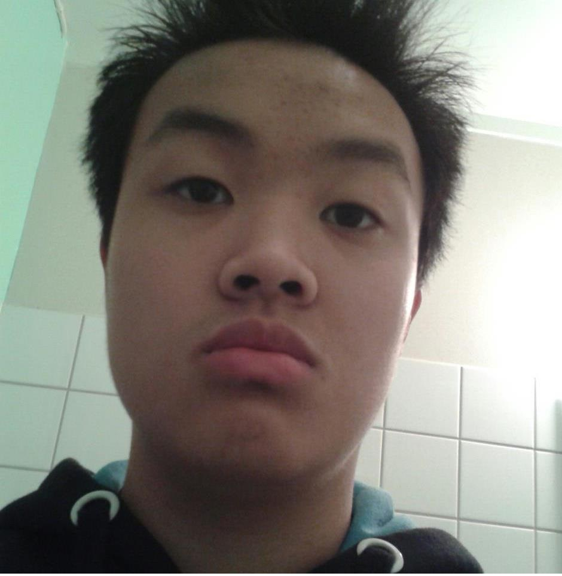

Om mig
Under så får du lära dig lite mer av mig
Jag heter Tommy Nguyen och fyllde i somras 19. På min fritid så gillar jag att träna på gym, vara framför datan, hänga med vänner och spela basket. Vad jag tycker jag är bra på är prata och förstå engelska och det är något jag har haft lätt för men något jag är mindre bra på är att köra bil.
Anledningen till att jag sökte till Utvecklare av Digtala Tjänster var på grund av att jag inte vill jobba som elektriker. Men man kan säga att anledningen till jag sökte till detta programmet var för att det var inom något jag alltid tyckt om vilket är datorn även ifall jag aldrig innan ha programmerat. Så mina tankar inför framtiden är att jag ska klara denna utbildningen och jobba inom det.
Information
Familj :
-
- Phuong
- Yen
- Loi
Tidigare Utbildningar
- 2000-2002 Rörstorpskolan
- 2002-2006 Mossleskolan
- 2006-2010 Gröndalsskolan
- 2010-2013 Finnvedens Gymnasium (Elteknik)